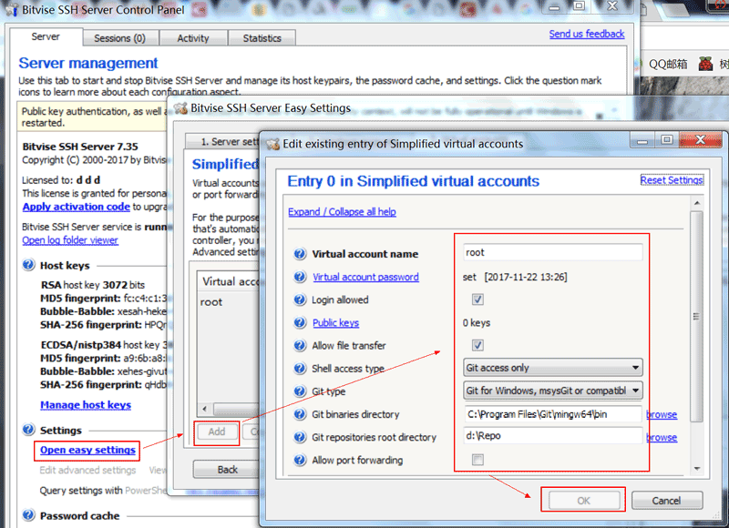

尽管 Github 不错，但在没有网络，或者不愿意把自己丑陋的代码拿给大家参观的时候，自己搞个 Git Server
还是必须的。在 Windows 上搭建一个 Git 服务器端比我想想中的简单，当然，这归功于某些软件确实做的不错。
在考虑要折腾这个之后，在网上搜了搜，有不少现成的 Git Server 软件，功能不一，需求也不同。但我觉得不需要搞这么复杂，应该 SSH Server
+ Git 就好。在 Windows 上跑一个 SSH Server 也有很多软件可以帮你，最终我选择了 Bitvise SSH Server。理由嘛，单纯因为它最近有过更新，个人使用免费。
然后，Server 上也需要安装 Git 软件。因为是 Windows，自然是 Git for
Windows 2.x。以前似乎叫 msysgit 来着。当然 Cygwin 里的 Git 应该也可以，但是我不想碰 Cygwin。所以服务起上需要：
Bitvise SSH Server
Git for Windows
- 安装 Bitvise SSH Server 和 Git 时的选项都很随意，能用就好。Git
不需要特别的配置，甚至都不需要把路径添加到 PATH。
- Bitvise SSH Server 安装好之后会随系统启动，并且会在右下角添加控制台的图标。双击打开设置窗口。

找到 Settings > Open easy settings，打开它。这里可以设置哪些账户可以登录 SSH，可以是
Windows 账户，或者是虚拟账户（Vistual accounts）。所谓的虚拟账户，顾名思义，就是由 Bitvise SSH Server 管理的账户。看起来虚拟账户比较简单，我们来新建一个。
接下来配置这个虚拟账户的属性：
为其添加密码是非常省事的做法，这样可以不用折腾 SSH Key。
为了稍微安全一点， Shell access type 选择 Git
access only。
Git type 自然是 msysGit or compatible。
Git binaries directiry 是 git-receive-pack.exe 等程序所在的目录，对于我的 Git for win 2.7.2，路径是 <path-to-git>\mingw64\bin。
Git repositories root directory 是存放 Git 项目的路径，随意。
设置可以根据需要调整，主要是，如果不是自己用，需要保证安全性。我不在乎，因为我那台 PC 都没接入互联网。
最后，在服务器端，Git 项目的存放路径下，运行：
git init --bare <my_repo_name>
接下来去客户端计算机，就能 clone 或者 push 到这个 repo 啦。
git clone
ssh://<user>@<ip-of-server>/<my_repo_name>